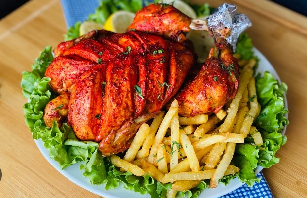

Chicken Tikka
and you can find it almost everywhere around the globe.
But in Pakistan, they use special spices and herbs to marinate chicken.
This means you need to give it a try!

Discounted Price: Rs.380 Rs.350
Charga
In this succulent dish of Pakistan, a marinated whole chicken is roasted perfectly to give you well-cooked chicken.
Charga is served with French fries, mint sauce, ketchup, and naan bread.

Discounted Price: Rs.870 Rs.810